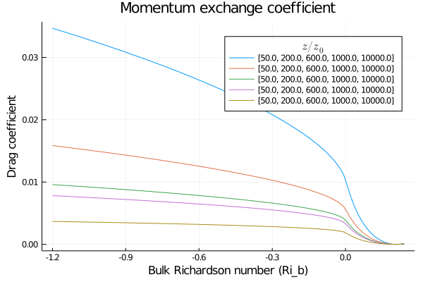
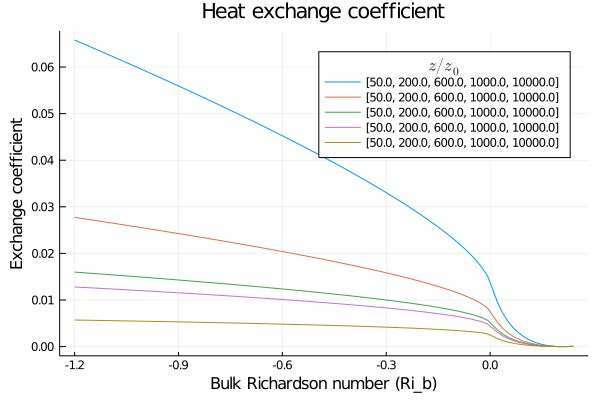
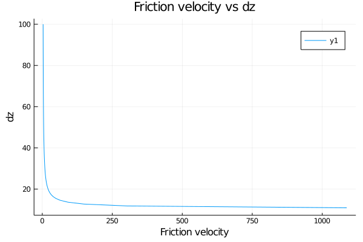

Surface Fluxes
Surface flux functions, e.g. for buoyancy flux, friction velocity, and exchange coefficients.
Byun1990
Compute surface fluxes using the approach in Byun (1990).
Plots
using ClimateMachine.SurfaceFluxes.Byun1990
using Plots, LaTeXStrings
using CLIMAParameters
struct EarthParameterSet <: AbstractEarthParameterSet end
param_set = EarthParameterSet()
FT = Float64
Ri_range = range(FT(-1.2), stop = FT(0.24), length = 100)
scales = FT[50, 200, 600, 1000, 10_000]
z_0 = FT(1.0)
γ_m, γ_h = FT(15.0), FT(9.0)
β_m, β_h = FT(4.8), FT(7.8)
Pr_0 = FT(0.74)
plot(Ri_range,
[Byun1990.compute_exchange_coefficients(param_set, Ri, scale * z_0, z_0,
γ_m, γ_h, β_m, β_h, Pr_0)[1]
for Ri in Ri_range, scale in scales],
xlabel = "Bulk Richardson number (Ri_b)",
ylabel = "Drag coefficient",
title = "Momentum exchange coefficient",
labels = scales, legendtitle=L"z/z_0")sh: 1: latex: not found
latex: failed to create a dvi file
Recreation of Figure 4(a) from Byun (1990)
plot(Ri_range,
[Byun1990.compute_exchange_coefficients(param_set, Ri, scale * z_0, z_0,
γ_m, γ_h, β_m, β_h, Pr_0)[2]
for Ri in Ri_range, scale in scales],
xlabel = "Bulk Richardson number (Ri_b)",
ylabel = "Exchange coefficient",
title = "Heat exchange coefficient",
labels = scales, legendtitle=L"z/z_0")sh: 1: latex: not found
latex: failed to create a dvi file
Recreation of Figure 4(b) from Byun (1990)
Nishizawa2018
Plots
using ClimateMachine.SurfaceFluxes.Nishizawa2018
using Plots, LaTeXStrings
using CLIMAParameters
struct EarthParameterSet <: AbstractEarthParameterSet end
param_set = EarthParameterSet()
FT = Float64
a = FT(4.7)
θ = FT(350)
z_0 = FT(10)
u_ave = FT(10)
flux = FT(1)
Δz = range(FT(10.0), stop=FT(100.0), length=100)
Ψ_m_tol, tol_abs, iter_max = FT(1e-3), FT(1e-3), 10
u_star = Nishizawa2018.compute_friction_velocity.(
Ref(param_set),
u_ave, θ, flux, Δz, z_0, a, Ψ_m_tol, tol_abs, iter_max)
plot(u_star, Δz, title = "Friction velocity vs dz",
xlabel = "Friction velocity", ylabel = "dz")
References
Businger, Joost A., et al. "Flux-profile relationships in the atmospheric surface layer." Journal of the atmospheric Sciences 28.2 (1971): 181-189. doi: 10.1175/1520-0469(1971)028<0181:FPRITA>2.0.CO;2
Nishizawa, S., and Y. Kitamura. "A Surface Flux Scheme Based on the Monin-Obukhov Similarity for Finite Volume Models." Journal of Advances in Modeling Earth Systems 10.12 (2018): 3159-3175. doi: 10.1029/2018MS001534
Byun, Daewon W. "On the analytical solutions of flux-profile relationships for the atmospheric surface layer." Journal of Applied Meteorology 29.7 (1990): 652-657. doi: 10.1175/1520-0450(1990)029<0652:OTASOF>2.0.CO;2
Wyngaard, John C. "Modeling the planetary boundary layer-Extension to the stable case." Boundary-Layer Meteorology 9.4 (1975): 441-460. doi: 10.1007/BF00223393